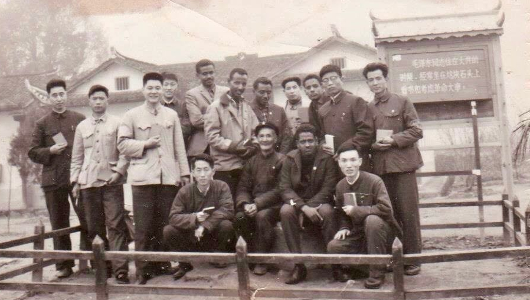

Introduction
During his state visit to Russia, President of Angola Joao Lourenco signed several bilateral agreements to include cooperation on diamond mining and processing. Russian Predident Vladimir Putin welcomed his Angolan counterpart, "I am happy to welcome you to Moscow in your capacity as the head of state. You are well acquainted with our country, because you studied here, and I hope you will find it both interesting and pleasant to see how Moscow and Russia have changed" (The Kremlin 2019). Indeed, President Lourenco attended the Vladimir Ilyich Lenin Military-Political Academy in 1978 (Cascais 2017). Certainly, President Lourenco is not the only African leader who has received military training abroad. Pictured below, Eritrean President Isaias poses with his fellow military students in 1967 China (Bodetti 2020).
Foreign military education and training occurs when a sponsoring state, state A, provides military education or training to military service members from a recipient state, state B. Foreign military education is one tool that states use to influence other states' military elites, and by extension, other states’ foreign policy alignment (Barkawi 2011). In an era, to which many scholars and policymakers refer to as the return of great power competition (e.g., Kroenig 2020; Hoffman 2021), what do the foreign military education networks of today’s African heads of state and military leadership tell us about great power influence on the continent?
Project Chapters
FME Descriptive Data
Network Analysis
Cost of Influence
Colonial Legacies
UN Voting Influence Analysis
Bringing it All Together
Sources